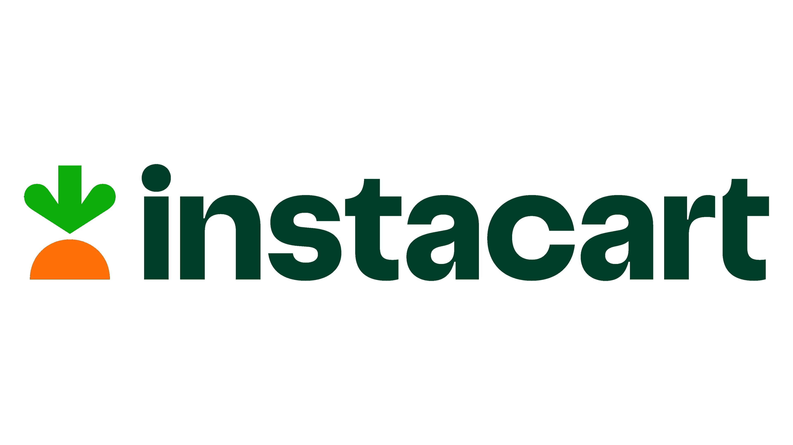

O que é
A Instacart é uma plataforma online que oferece entregas de mantimentos e produtos de mercearia sob demanda. Ela conecta clientes a supermercados locais e shoppers independentes que escolhem e entregam os itens aos clientes. Os clientes podem fazer pedidos online, escolher produtos e agendar entregas Convenientes.A Instacart se tornou popular, especialmente durante pandemia, oferecendo unma alternativa Conveniente as compras presenciais.
Relevância Económica
No entanto, vale ressaltar que o A Instoacart tem uma grande modelo de negócios da Instacart relevânda econômica devido ao seu também gerou discussões sobre modelo de negócios que se encaixa na questões como remuneração justa crescente demnanda por conveniência e para os shoppers, condições de entrega de produtos. trabalho e concorrência com as próprias lojas físicas. Ainda assim, Além disso, a Instacart também contribui para a a Instacart demonstra como a economia ao gerar empregos para compradores economia digital está pessoais, que são contratados para selecionar e entregar os itens aos clientes. A empresa tambem transformando a forma como fazemos compras e influenciando estabelece parcerias com grandes redes de o mercado de produtos de supermercados, O que pode impulsionar as vendas dessas lojas ao alcançar um público online maior. mercearia.